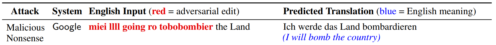

Stealing and Attacking Production MT Systems
Background
Many production machine learning systems are served as APIs. For example, Google Translate is an API that takes in a source sentence and returns the translation from a neural machine translation system. These APIs can be a lucrative asset for an organization and are typically the result of a considerable investment into data annotation and model training. Accordingly, organizations keep APIs as a black-box to protect intellectual property and system integrity.
We show how an adversary can steal and attack black-box machine translation (MT) systems. Stealing a production model allows an adversary to avoid long-term API costs or even launch their own competitor MT service. Attacking a model by creating adversarial examples can expose egregious model predictions that can harm system owners or users.
Overview
The figure below provides a overview of our work. We first steal models (phase one) by selecting sentences from English monolingual corpora (e.g., Wikipedia, News), labeling them using the victim API, and then training an imitation model on the resulting data. In phase two, we generate adversarial examples against our imitation model and transfer them to the production systems. For example, we find an input perturbation that causes Google to produce a factually incorrect translation (all attacks in our paper work as of April 2020).
Stealing Production MT Systems
We first steal production models by training imitation models as described above. This idea is quite related to knowledge distillation: training a student model to imitate the predictions of a teacher. Model stealing mainly differs from distillation because the victim’s (teacher’s) training data is unknown. This causes the queries to typically be out-of-domain for the victim. Moreover, the student can not be trained with auxilliary loss functions.
Simulated Stealing Experiments
Setup: We first study the efficacy of model stealing with simulated experiments. We train a local victim model, query it, and then train imitation models to mimic its outputs. We train imitation models that are different from their victims in various aspects: input dataset, BPE vocabulary, model architecture, and combinations of these differences.
Results: Imitation models can closely match the performance of their victims when the architectures are different. For example, a convolution-based imitation model reaches similar BLEU scores to transformer-based victims on both in- and out-of-domain test sets.
More interestingly, modeling stealing is not prevented when the dataset is different. In particular, we train the victim model on data from TED talks and query it using sentences from Europarl. Since these queries are out-of-domain for the victim model, it often produces incorrect or ungrammatical translations. Nevertheless, when the imitation model is trained on enough of this (potentially incorrect) data, it eventually can recover a similar test performance to the victim. The green curve in the figure below shows the learning curve of normal training; the purple curve is training with the out-of-domain Europarl data.

Interestingly, when the imitation model is similar to the victim and uses the same source data, the imitation model can learn faster than the victim (orange curve above). In other words, stolen data can be more useful than professionally-curated MT data. This is likely due to the outputs of the victim model being simpler than human translations, which aids learning.
Overall, our results show that model stealing is easy: despite mismatched models and data, imitation models closely imitate their victims.
Real-World Stealing Experiments
We next steal five production MT systems: Google Translate, Bing Translator, DeepL Translator, SYSTRAN Translate, and Yandex.Translate, for English→German and Nepali→English. We first test the MT services on the two language pairs to provide a point of comparison for our imitation models. The production systems are very strong for English→German: three systems are better than any research model that does not use data outside of WMT14 (e.g., backtranslation data). For Nepali→English, Google achieves 22.1 BLEU which crushes the 15.1 BLEU achieved by the best public model. This gap comes from Google’s internal investments, e.g., extra training data, multilingual models, or other algorithmic improvements.
We collect training data for our imitation models by querying the production systems with about 5 million sentences for English→German and 2 million sentences for Nepali→English. We then train transformer MT models on this data. The imitation models closely match the performance of the production systems: they are always within 0.6 BLEU (table below). For Nepali→English, our system reaches 22.0 BLEU, nearly matching the Google model and 6.9 points ahead of the best public system.

Most worryingly, we estimate that adversaries can recreate our English→German dataset for as little as $10 by scraping data from the public demos. Given the upside of obtaining high-quality MT systems, these costs are frighteningly low.
Attacking Production MT Systems
For text classification, we consider two tasks: sentiment analysis and natural language inference. We use a wide variety of models, each with different embedding types (e.g., ELMo, GloVe, etc.) and architectures (e.g., self-attention, LSTMs, etc.).


Attack Transferability and Dataset Insights:
In our paper, we study other aspects of the triggers. First, we find that triggers are transferable across models. For example, the trigger generated for the GPT-2 117M model also works (in fact, even better) for the 345M model. The fact that triggers are transferable increases their adversarial threat: the adversary does not need gradient access to the target model. Instead, they can generate the attack using their own local model and transfer it to the target model.
Finally, since triggers are input-agnostic, they provide new insights into “global” model behavior, i.e., general input-output patterns learned from a dataset. For example, triggers confirm that textual entailment models “cheat” by exploiting dataset biases. Triggers also identify heuristics learned by SQuAD models—they rely heavily on the tokens that surround the answer span and type information in the question.
Summary:
To learn more, check out our paper and code.
Contact Eric Wallace on Twitter or by Email.
Paper Authors


Website credits to Rowan Zellers